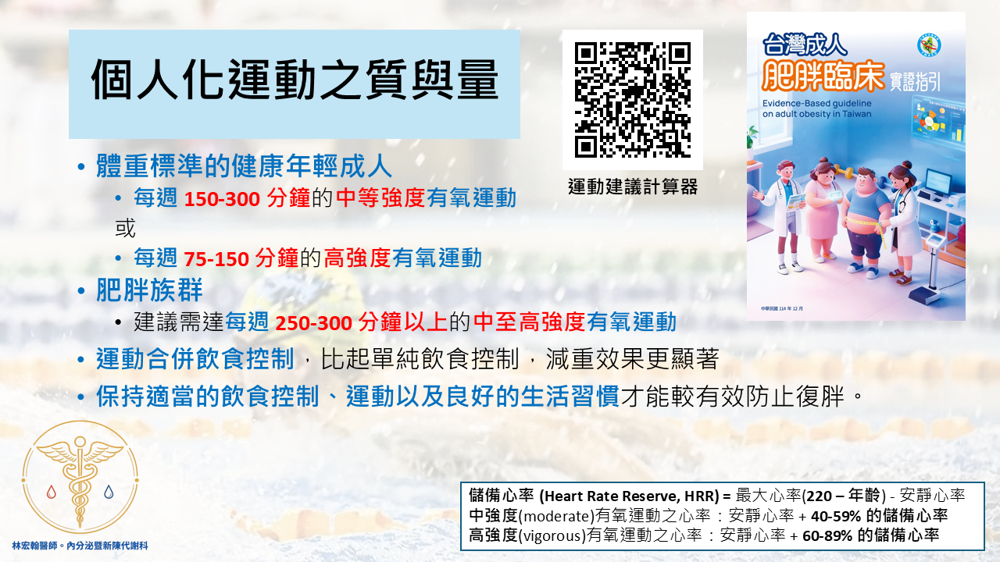

個人化運動之質與量
摘錄自114年12月台灣肥胖醫學會出版的《台灣成人肥胖臨床實證指引》，提供給您專家們的運動建議：

1. 運動有效降低慢性病發生率及死亡率，降低體脂；運動合併飲控減重更有效，減重後宜保持。
A. 身體活動量的增加可有效降低心血管疾病、腦血管疾病、糖尿病等多種慢性疾病的發生率，並降低死亡率。
B. 運動可以用來預防肥胖
(1) 體重標準的健康年輕成人，每週需150 至300 分鐘的中等強度有氧運動，或每週75 至150 分鐘的高強度有氧運動。
(2) 肥胖族群建議需達每週250-300 分鐘以上的中至高強度有氧運動。
C. 只靠運動來減重成效不大，仍可有效降低體脂肪及心血管疾病生率。
D. 運動合併飲食控制對於減重效果顯著，比起單純飲食控制， 增加運動介入雖僅稍微增加減重的效果，卻可得到更多對健康上的益處。
E. 減重後應同時保持適當的飲食控制、運動以及良好的生活習慣才能較有效防止復胖。
2. 中等強度運動維持體重及預防心血管疾病，高強度間歇運動短時間達類似效果，搭配阻力型運動對健康有益。
A. 有氧運動與阻力型運動對於健康皆有顯著益處。
(1) 運動的選擇建議以游泳、慢跑、騎腳踏車、快走、體操等有氧運動搭配阻力型運動。
(2) 每次 30 分鐘以上，每週至少 5 天的中等強度運動，有益於體重的維持與預防心血管疾病。
(3) 高強度間歇運動能夠改善體重過重/ 肥胖者的體重、BMI、腰圍、腰臀比、體脂率、脂肪肝與最大攝氧量；和中強度有氧運動相比，高強度間歇運動僅需較短的時間即可達到類似的效果。
3. 久坐少動易胖，糖尿病及心血管疾病風險、死亡率均增加；肥胖病人需考慮藥物治療。
(1) 久坐少動除了容易肥胖，罹患糖尿病及心血管疾病的風險及長期死亡率皆可能會增高。
(2) 無法長時間運動的人，若能利用短而零碎的時間運動，並改變生活型態盡可能多活動，同樣可以得到運動帶來的好處。
(3) 能利用各種零碎時間運動，可以有較佳的運動達成率。
(4) 在久坐30 分鐘後走路3分鐘，可改善收縮壓與休息時心跳。
相信讀完以上 3 點，對於尚未建立運動習慣的人，可能動力還是不足，或許我們可以從餐後走路 20 分鐘開始做起，不僅穩定我們的飯後血糖，同時也達成我們一日的運動量，因為三餐加起來則可以累積至每日 60 分鐘的運動量，一週平日 5 天下來，可以達成每週 300 分鐘的運動量。